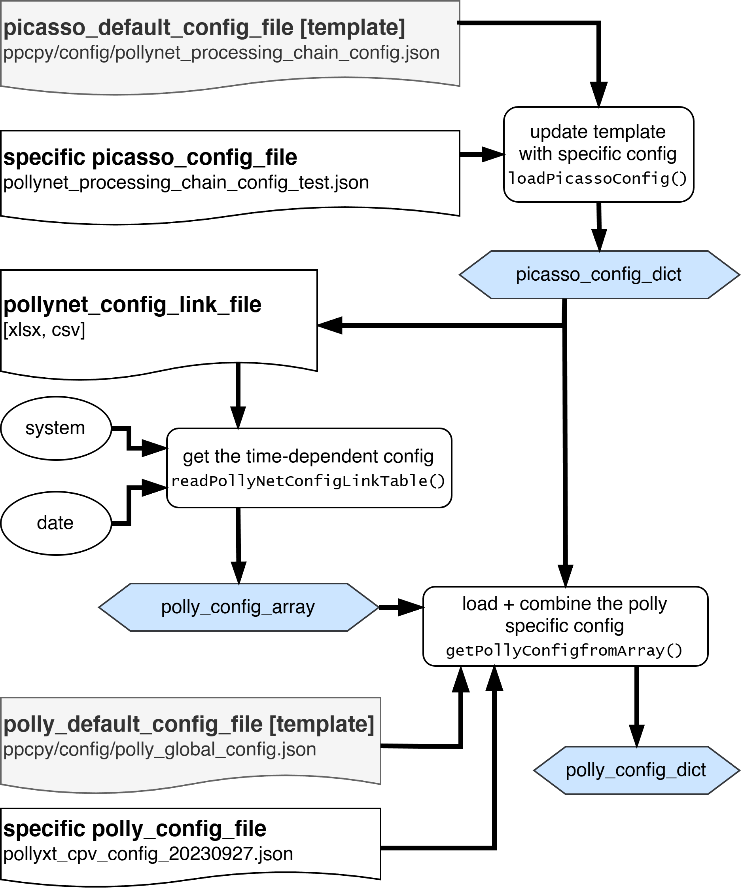

Configuration Files#
Three types of input files are needed for the configuration. The picasso_config_file, the polly_config_file (both with their respective template files),
and a table (pollynet_config_link_file) linking the systems, times and polly_config_files.
They are loaded with the following logic, producing three outputs: picasso_config_dict, polly_config_array, polly_config_dict:
{kind=link}

With calling PicassoProc(), the two config dicts are combined with the raw data to the data_cube.
They are stored as variables in the data_cube:
data_cube.polly_config_dict
data_cube.picasso_config_dict
Note
Compared to the matlab version, the defaults and template (polly_default_default) was merged into the polly_config_dict.
Overview on Keys#
Todo
The docstrings below are taken from the original matlab documentation. They might not reflect also the latest version. picasso config docs.
picasso_config_file#
Key |
Description |
Obsolete |
|---|---|---|
path_config |
||
fileinfo_new |
? |
|
doneListFile |
path to file with information of output figures |
|
polly_config_folder |
directory of polly configuration files |
|
log_folder |
directory of log files |
|
gdas1_folder |
directory of GDAS1 meteorological data (should that really be stored on picasso level?) |
|
defaultFile_folder |
directory of polly default files (we abandoned default files) |
x |
results_folder |
directory for exporting processing results |
|
pic_folder |
directory for exporting figures |
|
pollynet_config_link_file |
path of file linking times instruments and configs |
|
polly_global_config |
||
figDPI |
DPI of figures |
|
fontname |
fontname used for figures |
|
minDataSize |
minimum data size required for data processing (Byte) |
|
institute |
||
homepage |
homepage of pollynet |
|
contact |
(seems redundant with the field given in the config) |
|
visualizationMode |
? |
|
pyBinDir |
path of python.exe |
x |
flagDeleteData |
delete polly data after being processed |
|
flagDeletePreOutputs |
delete previous results for the same polly data |
|
flagEnableCaliResultsOutput |
enable calibration results output |
|
flagEnableResultsOutput |
enable results output |
|
flagEnableDataVisualization |
activate data visualization |
|
flagEnableDataVisualization24h |
||
flagPlotLastProfilesOnly |
||
flagDebugOutput |
||
flagReduceMATLABToolboxDependence |
||
flagSendNotificationEmail |
||
flagWatermarkOn |
attach water-mark on each figure |
|
MWRFolder |
folder of prw results from MWR. (This is only for LACROS) |
x (polly_config_file) |
polly_config_file#
Key |
Description |
Obsolete |
|---|---|---|
flagCorrectFalseMShots |
correct the invalid shots stored in the netcdf files |
|
flagFilterFalseMShots |
filter out the profiles with invalid shots |
|
flagForceMeasTime |
fix measurement time according to the mshots instead of using the original PC time |
|
flagDTCor |
enable deadtime correction |
|
flagSigTempCor |
enable signal temperature correction |
|
flagLCCalibration |
enable lidar calibration |
|
flagDepolCali |
enable depol calibration (which one?) |
|
flagWVCalibration |
enable water vapour calibration |
x |
flagUsePreviousDepolCali |
take previous depol calibration results when none is available |
x |
flagUsePreviousWVconst |
take previous water vapor calibration results when none is available |
x |
flagUsePreviousLC |
take previous lidar calibration results when none is available |
x |
flagUseManualRefH |
||
flagUseSameRefH |
take the same reference height for aerosol retrievals at all available wavelength |
|
flagAutoscaleRCS |
configure the color-range for range corrected signal in an automatic way |
|
flagMolDepolCali |
use molecular depolarization calibration |
|
flagTransCor |
||
flagOLCor |
||
flagUseTheoreticalMDR |
||
flagPicassoComparison |
||
depolCaliConst532 |
||
depolCaliConstStd532 |
||
depolCaliConst355 |
||
depolCaliConstStd355 |
||
polCaliEta532 |
eta at 532. If depol calibration failed because of cloud contamination and there was no available eta within 1 week the default value will be taken for depol caculations (not implemented?) |
|
polCaliEtaStd532 |
uncertainty of eta 532 |
|
polCaliEta355 |
eta at 355. If depol calibration failed because of cloud contamination and there was no available eta within 1 week the default value will be taken for depol caculations |
|
polCaliEtaStd355 |
uncertainty of eta 355 |
|
polCaliEta1064 |
||
polCaliEtaStd1064 |
||
LC |
Fallback lidar constants array in order of channels (probably not used) |
|
LCStd |
uncertainty of lidar constants |
|
overlapFile_532_total_FR |
file for the overlap function in the respective channel |
|
overlapFile_355_total_FR |
file for the overlap function in the respective channel |
|
molDepol1064 |
molecule depolarization ratio at 1064 nm |
|
molDepolStd1064 |
||
molDepol532 |
molecule depolarization ratio at 532 nm |
|
molDepolStd532 |
||
molDepol355 |
molecule depolarization ratio at 355 nm |
|
molDepolStd355 |
||
wvconst |
water vapor calibration constant [g/kg] |
|
wvconstStd |
||
volDepolerror355 |
||
volDepolerror532 |
||
volDepolerror1064 |
||
MWRFolder |
The folder of prw results from MWR. (This is only for LACROS) |
x |
dataFileFormat |
regular expression to extract the data and time info from polly data file |
|
gdas1Site |
gdas1 site for the current campaign (replaced by the more general met file loading) |
x |
meteorDataSource |
||
meteo_folder |
||
AERONETSite |
||
max_height_bin |
the number of bins you want to extract for each profile |
|
indexing_convention |
||
first_range_gate_indx |
the first bin for each channel |
|
first_range_gate_height |
the height of the first range bin for each channel [m] |
|
deltaT |
||
dtCorModeLabel |
||
dtCorMode |
deadtime correction mode (1 netcdf 2 nonparalyzable user-defined 3 paralyzable user-defined 4 no) |
|
dt |
parameters for deadtime correction |
|
bgCorRangeIndxLow |
bottom index of signal to calculate the background |
|
bgCorRangeIndxHigh |
top index of signal to calculate the background |
|
mask_SNRmin |
the SNR threshold to mask noisy bins |
|
tempCorFunc |
||
init_depAng |
the initial angle of the polariser withou depo calibration |
|
depol_cali_mode |
1 automated based on angle 2 fixed periods |
|
depol_cal_time_fixed_p_start |
fixed timestamp for start of the positive angle 05:30:00 |
|
depol_cal_time_fixed_p_end |
fixed timestamp for the end of the postive angle 05:35:30 |
|
depol_cal_time_fixed_m_start |
fixed timestamp for start of the negative angle 05:35:30 |
|
depol_cal_time_fixed_m_end |
fixed timestamp for end of the negative angle 05:40:00 |
|
maskDepCalAng |
the mask for postive and negative calibration angle n|p|none |
|
depol_cal_minbin_532 |
the minimum bin used for depolarization calibration |
|
depol_cal_maxbin_532 |
the maximum bin used for depolarization calibration |
|
depol_cal_SNRmin_532 |
Threshold for the minimum SNR used in depol-calibration (array of 4) |
|
depol_cal_sigMax_532 |
The maximum signal strength could be used for depol-calibration to prevent signal pileup effects (array of 4) |
|
rel_std_dplus_532 |
Threshold for maximum relative uncertainty of signal ratio at +45 depol-calibration |
|
rel_std_dminus_532 |
Threshold for maximum relative uncertainty of signal ratio at -45 depol-calibration |
|
depol_cal_segmentLen_532 |
the small region for evaluating the uncertainty of depol calibration |
|
depol_cal_smoothWin_532 |
the smoothing window for depol-calibration |
|
depol_cal_minbin_355 |
||
depol_cal_maxbin_355 |
||
depol_cal_SNRmin_355 |
||
depol_cal_sigMax_355 |
||
rel_std_dplus_355 |
||
rel_std_dminus_355 |
||
depol_cal_segmentLen_355 |
||
depol_cal_smoothWin_355 |
||
depol_cal_minbin_1064 |
||
depol_cal_maxbin_1064 |
||
depol_cal_SNRmin_1064 |
||
depol_cal_sigMax_1064 |
||
rel_std_dplus_1064 |
||
rel_std_dminus_1064 |
||
depol_cal_segmentLen_1064 |
||
depol_cal_smoothWin_1064 |
||
isFR |
flag of far-range channel (array of all channels) |
|
isNR |
flag of near-range channel (array of all channels) |
|
isDFOV |
flag of dual field of view channels (array of all channels) |
|
is532nm |
flag of 532 channel (array of all channels) |
|
isRR |
flag of rotational raman channel (array of all channels) |
|
is355nm |
flag of 355 channel (array of all channels) |
|
is1064nm |
flag of 1064 channel (array of all channels) |
|
isTot |
flag of total channel (array of all channels) |
|
isCross |
flag of cross channel (array of all channels) |
|
isParallel |
flag of parallel channel (array of all channels) |
|
is387nm |
flag of 387 channel (array of all channels) |
|
is407nm |
flag of 407 channel (array of all channels) |
|
is607nm |
flag of 607 channel (array of all channels) |
|
is1058nm |
flag of 1058 channel (array of all channels) |
|
minSNR_4_sigNorm |
The minimum SNR requirement for the signal used for signal normalization both for near- and far- range signal |
|
channelTags |
label of each channel |
|
channelTag |
||
minPC_fog |
The minimum photon count for non-fog profile. The detected photon count between 40th and 120th bin (above the first bin) for each 30s profile will be accumulated for the fog profile screening. |
|
TR |
Transmission ratio (aim for switch to GHK) |
|
G |
||
H |
||
K |
||
voldepol_error_355 |
||
voldepol_error_532 |
||
voldepol_error_1064 |
||
overlapCalMode |
1 frnr 2 Raman |
|
overlapCorMode |
0 no 1 from file 2 calculated 3 glueing (not supported) |
|
overlapSmoothBins |
vertical window (bins) for smoothing the noisy overlap function |
|
saturate_thresh |
the threshold for signal saturation (MHz) |
|
heightFullOverlap |
height for the base of full overlap [m] (array over channels) |
|
cloudScreenMode |
1 using signal gradient 2 using Zhaos algorithm |
|
maxCloudSearchHeight |
||
maxCloudSearchHeight_NR |
||
maxSigSlope4FilterCloud |
||
maxSigSlope4FilterCloud_NR |
||
intNProfiles |
accumulated profiles for retrieving |
|
minIntNProfiles |
minimum profiles for aerosol retrieving |
|
flagUseLatestGDAS |
x |
|
radiosondeType |
x |
|
radiosondeSitenum |
WMO site number for the nearest radiosonde |
x |
minDecomLogDist355 |
||
minDecomLogDist532 |
||
minDecomLogDist1064 |
||
maxDecomHeight355 |
||
maxDecomHeight532 |
||
maxDecomHeight1064 |
||
maxDecomThickness355 |
||
maxDecomThickness532 |
||
maxDecomThickness1064 |
||
decomSmoothWin355 |
The smoothing window for molecular corrected signal used in Douglas-Peucker decomposition algorithm |
|
decomSmoothWin532 |
||
decomSmoothWin1064 |
||
minRefThickness355 |
The minimum thickness for the reference height. There is thickness test in the RayleighFit function which will ensure the minimum thickness of the reference height |
|
minRefThickness532 |
||
minRefThickness1064 |
||
minRefDeltaExt355 |
The maximum slope difference between measured signal and molecule signal. This threshold is used in RayleighFit slope test |
|
minRefDeltaExt532 |
||
minRefDeltaExt1064 |
||
refH_FR_355 |
||
refH_FR_532 |
||
refH_FR_1064 |
||
refH_NR_355 |
||
refH_NR_532 |
||
minRefSNR355 |
The minimum SNR for the accumulated signal at the tested reference height |
|
minRefSNR532 |
||
minRefSNR1064 |
||
minRefSNR_NR_355 |
||
minRefSNR_NR_532 |
||
LR355 |
Default lidar ratio for Klett retrieving method |
|
LR532 |
Default lidar ratio for Klett retrieving method |
|
LR1064 |
Default lidar ratio for Klett retrieving method |
|
LR_NR_355 |
Default lidar ratio for Klett retrieving method |
|
LR_NR_532 |
Default lidar ratio for Klett retrieving method |
|
refBeta355 |
Reference value for Klett and Raman method |
|
refBeta532 |
Reference value for Klett and Raman method |
|
refBeta1064 |
Reference value for Klett and Raman method |
|
smoothWin_klett_355 |
||
smoothWin_klett_532 |
||
smoothWin_klett_1064 |
||
smoothWin_klett_NR_355 |
||
smoothWin_klett_NR_532 |
||
smoothWin_raman_355 |
||
smoothWin_raman_532 |
||
smoothWin_raman_1064 |
||
smoothWin_raman_NR_355 |
||
smoothWin_raman_NR_532 |
||
maxIterConstrainFernald |
The maximum iterations for searching the best Lidar Ratio with Constrained-AOD fernald method (not implemented) |
|
minLRConstrainFernald |
minimum lidar ratio used for Constrained-AOD fernald method (not implemented) |
|
maxLRConstrainFernald |
maximum lidar ratio used for Constrained-AOD fernald method (not implemented) |
|
minDeltaAOD |
minimum AOD deviation that is required for Constrained-AOD method (not implemented) |
|
minRamanRefSNR355 |
minimum SNR for the signal at the reference height |
|
minRamanRefSNR532 |
minimum SNR for the signal at the reference height |
|
minRamanRefSNR1064 |
minimum SNR for the signal at the reference height |
|
minRamanRefSNR387 |
minimum SNR for the signal at the reference height |
|
minRamanRefSNR607 |
minimum SNR for the signal at the reference height |
|
minRamanRefSNR_NR_355 |
minimum SNR for the signal at the reference height |
|
minRamanRefSNR_NR_532 |
minimum SNR for the signal at the reference height |
|
minRamanRefSNR_NR_387 |
minimum SNR for the signal at the reference height |
|
minRamanRefSNR_NR_607 |
minimum SNR for the signal at the reference height |
|
min_RR_RefSNR1058 |
minimum SNR for the signal at the reference height |
|
angstrexp |
Default angstroem exponent for Raman method |
|
angstrexp_NR |
Default angstroem exponent for Raman method |
|
LCMeanWindow |
The window for calculating the Lidar Constant |
|
LCMeanMinIndx |
minimum bin used for lidar constant calculation |
|
LCMeanMaxIndx |
maximum bin used for lidar constant calculation |
|
LCCalibrationStatus |
tag for lidar calibration status which will displayed in the output figures |
|
flagUseRetrievedExt4LCCalc |
||
quasi_smooth_h |
spatial smoothing window for quasi retrieving method (per channel) |
|
quasi_smooth_t |
temporal smoothing window for quasi retrieving method (per channel) |
|
IWV_instrument |
the data source of IWV |
|
maxIWVTLag |
maxIWVTLag |
|
tTwilight |
span of the twilight (what unit?) |
|
hWVCaliBase |
minimum height used for calculating the IWV from lidar measurement (profile) |
|
hWVCaliTop |
minimum top height used for calculating the IWV from lidar measurement (profile) |
|
minSNRWVCali |
||
clear_thres_par_beta_1064 |
threshold for discriminating clear atmosphere based on particle backscatter at 1064nm |
|
turbid_thres_par_beta_1064 |
threshold for discriminating turbid atmosphere based on particle backscatter at 1064nm |
|
turbid_thres_par_beta_532 |
threshold for discriminating turbid atmosphere based on particle backscatter at 532nm |
|
droplet_thres_par_depol |
threshold for discriminating cloud droplets based on particle depolarization ratio at 532nm |
|
spheroid_thres_par_depol |
threshold for discriminating spheriod paricles based on particle depolarization ratio at 532nm |
|
unspheroid_thres_par_depol |
threshold for discriminating unspheriod paricles based on particle depolarization ratio at 532nm |
|
ice_thres_par_depol |
threshold for discriminating ice crystals based on particle depolarization ratio at 532nm |
|
ice_thres_vol_depol |
threshold for discriminating ice crystals based on volume depolarization ratio at 532nm |
|
large_thres_ang |
threshold for discriminating large particles based on angstroem exponent |
|
small_thres_ang |
threshold for discriminating small particles based on angstroem exponent |
|
cloud_thres_par_beta_1064 |
threshold for discriminating cloud layers based on quasi particle backscatter at 1064nm |
|
min_atten_par_beta_1064 |
minimum attenuation factor could be expected at the first 250m penatration depth |
|
search_cloud_above |
parameter is used in cloud top detection. The cloud top will be searched between the first bin with quasi particle backscatter at 1064nm larger than cloud_thres_par_beta_1064 and +search_height_above |
|
search_cloud_below |
parameter is used in cloud base detection. The cloud base will be searched between the first bin with quasi particle backscatter at 1064nm larger than cloud_thres_par_beta_1064 and -search_height_below |
|
overlap532Color |
the color settings for the line of overlap |
|
overlap355Color |
the color settings for the line of overlap |
|
xLim_Profi_Bsc |
x-range of the profile of aerosol backscatter |
|
xLim_Profi_NR_Bsc |
x-range of the profile of aerosol backscatter near-range |
|
xLim_Profi_Ext |
x-range of the profile of aerosol extinction coefficient |
|
xLim_Profi_NR_Ext |
x-range of the profile of aerosol near-range extinction coefficient |
|
xLim_Profi_WV_RH |
x-range (z-range) of the profile (time-height plot) of water vapor mixing ratio |
|
xLim_Profi_RH |
||
xLim_Profi_WVMR |
||
xLim_Profi_RCS |
x-range of the profile of range corrected signal |
|
xLim_Profi_LR |
x-range of the profile of lidar ratio |
|
xLim_Profi_AE |
||
xLim_beta_532_Poliphon |
||
yLim_beta_532_Poliphon |
||
yLim_LC_355 |
y-range of the profile of lidar constant at certain wavelength |
|
yLim_LC_532 |
y-range of the profile of lidar constant at certain wavelength |
|
yLim_LC_1064 |
y-range of the profile of lidar constant at certain wavelength |
|
yLim_LC_387 |
y-range of the profile of lidar constant at certain wavelength |
|
yLim_LC_607 |
y-range of the profile of lidar constant at certain wavelength |
|
yLim_LC_355_NR |
y-range of the profile of lidar constant at certain wavelength |
|
yLim_LC_532_NR |
y-range of the profile of lidar constant at certain wavelength |
|
yLim_WVConst |
y-range of the profile of water vapor calibration constant |
|
yLim_FR_RCS |
y-range of the profile of range corrected signal (time-height plot of signal saturation bits) from far-range channels |
|
yLim_NR_RCS |
y-range of the profile of range corrected signal (time-height plot of signal saturation bits) from near-range channels |
|
yLim_FR_DR |
||
yLim_att_beta |
y-range of the time-height plot of near-range attenuated backscatter |
|
yLim_att_beta_NR |
y-range of the time-height plot of far-range attenuated backscatter |
|
yLim_OC_att_beta |
||
yLim_Quasi_Params |
y-range of aerosol optical products retrieved by quasi-retrieving method |
|
yLim_WV_RH |
y-range of the profile of water vapor mixing ratio (relative humidity) |
|
yLim_Profi_Ext |
y-range of the profile of extinction coefficient |
|
yLim_Profi_LR |
y-range of the profile of lidar ratio |
|
yLim_Profi_DR |
y-range of the profile of volume/particle depolarization ratio |
|
yLim_Profi_Bsc |
y-range of the profile of aerosol backscatter |
|
yLim_Profi_WV_RH |
y-range of the profile of water vapor mixing ratio (relative humidity) |
|
yLim_LC_ratio_355_387 |
y-range of the scatter plot of the lidar constant ratio at two given wavelength |
|
yLim_LC_ratio_532_607 |
y-range of the scatter plot of the lidar constant ratio at two given wavelength |
|
yLim_depolConst_355 |
y-range of the profile of depolarization calibration constant at certain wavelength |
|
yLim_depolConst_532 |
y-range of the profile of depolarization calibration constant at certain wavelength |
|
yLim_depolConst_1064 |
y-range of the profile of depolarization calibration constant at certain wavelength |
|
yLim_cloudinfo |
||
yLim_all_profiles_high_range |
||
yLim_all_profiles_low_range |
||
zLim_att_beta_355 |
z-range of the time-height plot of attenuated backscatter |
|
zLim_att_beta_532 |
z-range of the time-height plot of attenuated backscatter |
|
zLim_att_beta_1064 |
z-range of the time-height plot of attenuated backscatter |
|
zLim_quasi_beta_355 |
z-range of the time-height plot of quasi aerosol backscatter coefficient |
|
zLim_quasi_beta_532 |
z-range of the time-height plot of quasi aerosol backscatter coefficient |
|
zLim_quasi_beta_1064 |
z-range of the time-height plot of quasi aerosol backscatter coefficient |
|
zLim_quasi_Par_DR_532 |
z-range of the time-height plot of quasi particle depolarization ratio |
|
zLim_FR_RCS_355 |
z-range of the time-height plot of range corrected signal from far-range channels |
|
zLim_FR_RCS_387 |
z-range of the time-height plot of range corrected signal from far-range channels |
|
zLim_FR_RCS_407 |
z-range of the time-height plot of range corrected signal from far-range channels |
|
zLim_FR_RCS_532 |
z-range of the time-height plot of range corrected signal from far-range channels |
|
zLim_FR_RCS_607 |
z-range of the time-height plot of range corrected signal from far-range channels |
|
zLim_FR_RCS_1064 |
z-range of the time-height plot of range corrected signal from far-range channels |
|
zLim_NR_RCS_355 |
z-range of the time-height plot of range corrected signal from near-range channels |
|
zLim_NR_RCS_387 |
z-range of the time-height plot of range corrected signal from near-range channels |
|
zLim_NR_RCS_407 |
z-range of the time-height plot of range corrected signal from near-range channels |
|
zLim_NR_RCS_532 |
z-range of the time-height plot of range corrected signal from near-range channels |
|
zLim_NR_RCS_607 |
z-range of the time-height plot of range corrected signal from near-range channels |
|
zLim_VolDepol_355 |
z-range of volume depolarization ratio |
|
zLim_VolDepol_532 |
z-range of volume depolarization ratio |
|
zLim_VolDepol_1064 |
z-range of volume depolarization ratio |
|
zLim_quasi_ANG |
||
colormap_basic |
basic colormap |
|
PI |
project investigator |
|
PI_affiliation |
affiliation of PI |
|
PI_affiliation_acronym |
acronym of the affiliation of the PI |
|
PI_address |
address of the PI |
|
PI_phone |
phone number of the PI |
|
PI_email |
email of the PI |
|
Data_Originator |
data originator |
|
Data_Originator_affiliation |
affiliation of the data originator |
|
Data_Originator_affiliation_acronym |
acronym of the data originator |
|
Data_Originator_address |
address of the data originator |
|
Data_Originator_phone |
phone number of the data originator |
|
Data_Originator_email |
email of the data originator |
|
comment |
comment on the data |
|
logbookFile |
path to the logbook file. Only the logfile generated by the pollylog program was accepted. |
|
logbookPath |
||
logbookFileName |
||
radiosondeFolder |
directory of the radiosonde file |
x |
calibrationDB |
database for saving calibration results |
|
imgFormat |
image format |
|
partnerLabel |
partner label to be displayed in the figures |
|
prodSaveList |
control the output of nc files |
|
meteo_file |
x |
|
bgCorRangeIndx |
the bottom and top index of signal to calculate the background (should be channel depended) |
|
overlapFile532 |
overlap file for saving the overlap function of 532 channel |
|
overlapFile355 |
overlap file for saving the overlap function of 532 channel |
|
name |
taken from link table |
|
site |
taken from link table |
|
asl |
taken from link table |
|
lat |
taken from link table |
|
lon |
taken from link table |